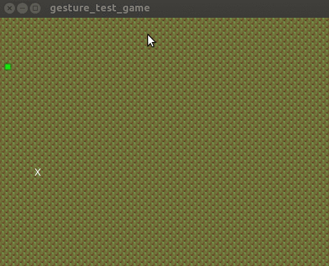

<script Modulo
    src="/js/Modulo.js"
    -src="/libraries/core.html"
></script>
<x-Page archivedid="21"pagetitle="Godot Gestures: Pinch, twist, and drag gesture detection for mobile games">

<article class="content post tag-godot tag-game-dev tag-mobile tag-gestures">
<h1 class="title">Godot Gestures: Pinch, twist, and drag gesture detection for mobile games</h1>
<section class="post-content">
<p>As it turns out, writing gesture detection is not an easy task. I gave it a shot anyway, and wrote a re-usable scene for the awesome free software <a href="http://godotengine.org/">Godot Game Engine</a>.</p>
<p>It all started <a href="../p/12b0a44e-b576-4eed-bd27-2a4e6124d960/index.html">when I decided to switch the focus of my work-in-progress game Sawdust to "mobile-first"</a>. To provide a more tactile and intuitive interface, I needed to detect "twist" gestures for rotating pieces, and "double-tap" gestures for placing them. Down the rabbit hole I went, and I built a re-usable drop-in script for detecting a variety of gestures on mobile.</p>
<h3 id="godotgesturelibrary">godot-gesture library</h3>
<p>The code is MIT-licensed and ready to drop into your project, so if you want twist, pinch, two-finger drag, or double-tap gesture detection within your project, get it here:</p>
<ul>
<li><a href="https://bitbucket.org/michaelb/godot-gesture">Godot Gesture</a></li>
</ul>
<p></p>
<h3 id="methodology">Methodology</h3>
<p>It's quite likely I wasn't looking in the right places, but I couldn't find any readily usable information on detecting these gestures, so the general philosophy I used is as follows:</p>
<ul>
<li><p>Gesture events only register when the 2nd finger is lifted</p></li>
<li><p>"Votes" are summed up for how closely it follows certain rules to trigger each of the 3 events checked</p></li>
<li><p>The event with the highest vote "wins" and is triggered</p></li>
</ul>
<p>Tap and double-tap events are easy. Two-finger drag is fairly easy too. Things get trickier with pinch, twist, and distinguishing between these three. The "votes" for each event then are as follows:</p>
<ul>
<li><p>If one finger crosses an axis of the average position of the other, while keeping roughly the same distance from it, then that is a twist event, with the consistency of the distance determining it's "votes"</p></li>
<li><p>If the distance traveled of two fingers roughly "cancels each other out" when summed as vector, then its a pinch in or out, with "how opposite" the two vectors are being the votes</p></li>
<li><p>If the vector traveled of two fingers is roughly the same, then it's a two finger drag event, with the average distance being the votes</p></li>
</ul>
<p>As I said, not sure if these are the best criteria, but after tweaking a few thresholds it seems to work fairly well on my tablet device, certainly well enough for my usage. I'd love to see better implementations, however.</p>
<hr />
<p><em>Update: I added event debouncing to distinguish simple drags / taps.</em></p>
</section>
</article>
</div>

</x-Page>